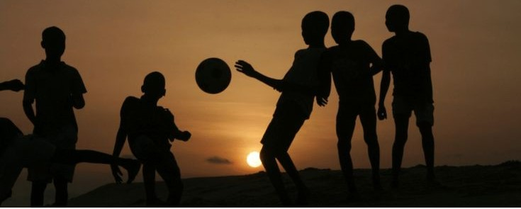

Discover Morocco & African Football




The Africa Cup of Nations 2025 in Morocco represents a historic moment in African football. As the continent's most prestigious tournament, it brings together the finest talents and passionate fans from across Africa.
Morocco, with its rich football heritage and modern infrastructure, is proud to host this prestigious event. The tournament will showcase the best of African football while celebrating the continent's diverse cultures and traditions.
Learn More
The 2025 Africa Cup of Nations in Morocco promises to be a landmark event in African football history. As the continent gathers in Morocco, fans and teams alike are set to experience world-class stadiums, vibrant culture, and unforgettable moments on and off the pitch.
Since its inception in 1957, the Africa Cup of Nations (AFCON) has grown into the continent's most prestigious football tournament, uniting nations and celebrating African talent. The competition began with just three teams—Egypt, Sudan, and Ethiopia—but has expanded over the decades to include 24 nations, reflecting the growth and passion for football across Africa.
AFCON has witnessed legendary moments, unforgettable matches, and the rise of football icons who have inspired generations. The tournament has not only crowned champions but also fostered unity, pride, and hope throughout the continent. From the early days to the modern era, AFCON continues to be a stage where African football shines on the world scene, showcasing the continent's diversity, resilience, and love for the beautiful game.
The Moroccan national team, nicknamed the Atlas Lions, has been a formidable force in African football. They made history in the 2022 FIFA World Cup by becoming the first African and Arab nation to reach the semi-finals, showcasing their tactical prowess and resilience. Morocco's only AFCON title came in 1976, but they have consistently been strong contenders in the tournament. The team has produced legendary players like Ahmed Faras and Noureddine Naybet, and currently boasts stars such as Achraf Hakimi and Hakim Ziyech. Hosting the 2025 AFCON, Morocco aims to leverage home advantage to clinch their second continental title.
The Africa Cup of Nations has delivered some of the most unforgettable moments and legendary matches in football history. From dramatic finals to underdog triumphs, AFCON has been the stage for passion, rivalry, and pure football magic that has captivated fans across the continent and the world.
Discover the story behind Africa's most prestigious football tournament
The Africa Cup of Nations 2025 in Morocco represents the pinnacle of African football, bringing together the continent's finest teams for a prestigious competition.
With its modern stadiums and world-class infrastructure, Morocco is ready to host this major African football event.
24 African national teams will compete for the prestigious title of African champions.
Participating Teams
Total Matches
Host Cities
Champion
The 24 teams divided into 6 groups will compete to qualify for the next stage.
The 16 best teams will compete for a place in the quarter-finals.
The 8 remaining teams will battle for a place in the semi-finals.
The 4 best teams will compete for a place in the final.
The decisive match that will crown the new African champion.